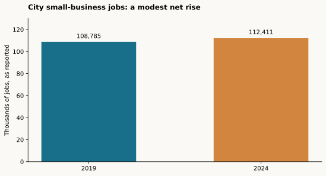

A rare city-level small-business series
Incorporated Portland city · 2019 and 2024 · reported QCEW small-business jobs, 108,785 and 112,411 (+3.3%). Values transcribed from Prosper Figure 1.06.
Read with care: Report calls the band 1–20 in its text but 1–19 elsewhere. QCEW standard size classes are establishment based; underlying city table and unit need confirmation. Do not compare directly with SUSB enterprise shares.